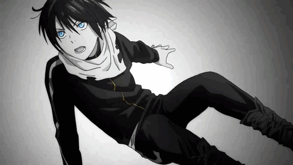
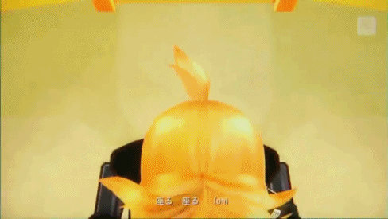
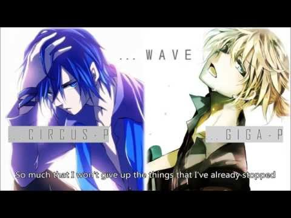
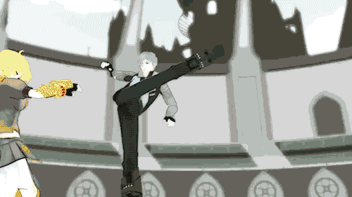

Brittany's Anime List
Favorite Openings and Endings
These are my music tatses that started to form at the end of freshman. This list will also include vocaloid songs!
Noragami Aragoto: Opening
Words cannot explain how much I love this opening! The drums and guitar are sooooo awesome! You know an openings good when you find the English cover just to use it in a project.
DanganRonpa: THE WHOLE SOUNDTRACK
As most critics know, one of the things that set the mood in the story the best is the music. This game and anime hit the nail right on the head with that idea. The music fits in every single scene so well!

Tokyo Teddy Bear: Rin Kagamine
This is one of the more "emo" of the songs, if you will. From what I understand from the english translation, this song is about a teen who thinks that she is imperfect, and is told so by her peers, and possibly family too. She talks about in the song that their "big words" don't phase her. And in some scenes she's seen in what I can only assume is a hospital room, which leads me to believe that she was suicidal. It's a good song but the lyrics might be a trigger...

Remote Controller: Kagamine Len & Rin
Now to a happier song! Remote Controller is a song, telling society that media is controlling us. Being demonstrated in multiple scenes when the 2 vocaloids take control over each other.
Wave: Giga - p
Morbi leo risus, porta ac consectetur ac, vestibulum at eros. Cras mattis consectetur purus sit amet fermentum.
RWBY: All Openings
Maecenas sed diam eget risus varius blandit sit amet non magna.
